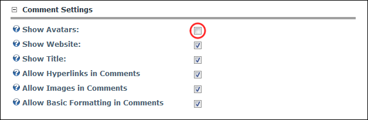
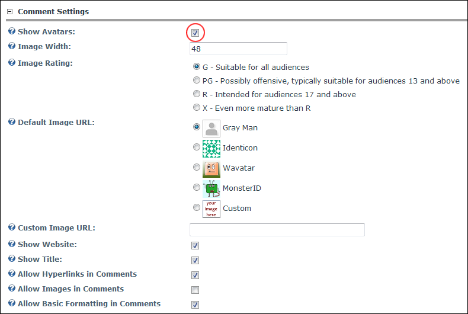
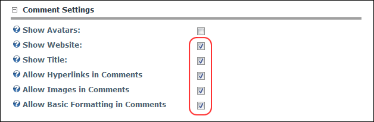
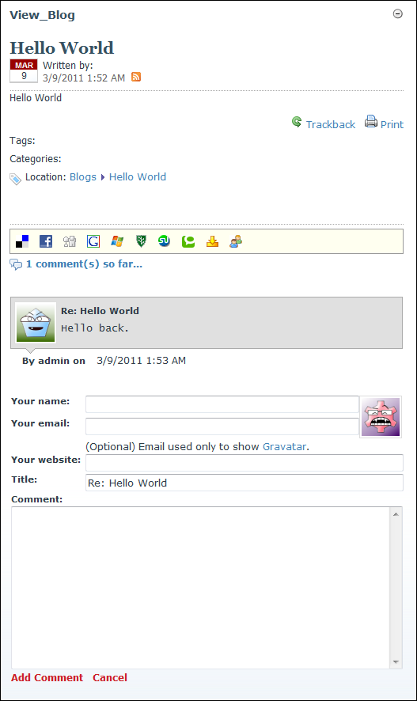

Configuring Blog Comment Settings
How to enable avatars and manage comment settings on the View_Blog module. Avatars are displayed the beside user comments on the View_Blog module. The Blog module uses Gravatars (Globally Recognized Avatars) as the default option for user avatars. For more information, visit http://gravatar.com. For users without a Gravatar, the fallback options are available the "Gray Man" icon, one of three avatars generation tools, or you can enter any image URL.
- Select Module Options from the View_Blog module actions menu.
- Go to the Comment Settings section.
- At Show Avatars, select from these options:
- Unmark
 the check box to disable avatars. Skip to Step 4.
the check box to disable avatars. Skip to Step 4.

- Mark
 the check box to enable avatars. This displays the below fields:
the check box to enable avatars. This displays the below fields:- In the Image Width text box, enter a pixel width for the avatar. The default setting of 48 is recommended if you are using the default style of the comments.
- At Image Rating, select an avatar rating which is suitable for your indented audience.
- At Default Image URL, select the avatar to be used for comments made by users without a Gravatar:
- Gray Man: Select to display the Gray Man image as pictured.
- Identicon: Select to generate a unique identifying image based on the IP address of the user's computer, or on their email address if provided.
- Wavatar: As above.
- MonsterID: As above.
- Custom: Select to use your own image.
- In the Custom Image URL text box, enter the URL where your image is located. E.g. http://www.domain.com/myimage.jpg

- At Show Website, to display a user website address (as set on their profile) with their comments - OR - to hide.
- At Show Title, to enable users to create unique titles for entry comments - OR - to disable.
- At Allow Hyperlinks in Comments , to enable users to include hyperlinks in comments - OR - to disable.
- At Allow Images in Comments, to enable images to be included in comments - OR - to disable.
- At Allow Basic Formatting in Comments, to enable users to use basic HTML tags in their comments such as bold, strong, underline - OR - to disable.

-
Click the Update button.

Avatars Enabled on the View_Blog module. In this scenario, Wavatar has been selected as the fallback.